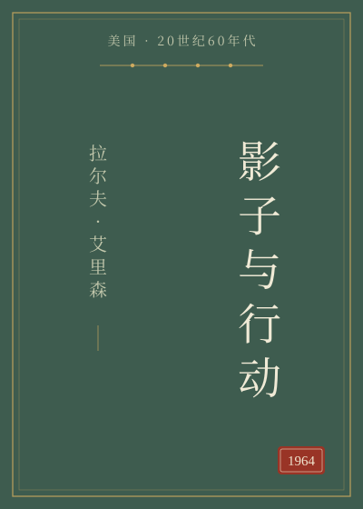
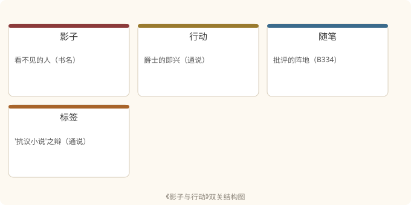

影子与行动
一、基本信息
| 作者 | 拉尔夫·艾里森 |
|---|---|
| 成书/出版 | 1964年（Britannica B334：Shadow and Act (1964)） Ralph Ellison — Encyclopaedia Britannica（百科全书） |
| 国别/地区 | 美国 |
| 时代 | 现当代 · 20世纪60年代 |
| 体裁 | 散文集 |
| 语言 | 英语 |

《影子与行动》双关结构图（主题·结构图）
二、创作背景
Britannica（B334）：Shadow and Act (1964)——散文集（与 Going to the Territory (1986) 并列）。
Britannica（B334）：艾里森——Invisible Man——1953 National Book Award。
题材（通说待核）：文学、爵士与种族的随笔——'影子'与'行动'的双义。
三、内容脉络
（通说待核）论爵士、论《看不见的人》的创作与批评回应。
（通说待核）'影子与行动'：非裔美国人经验的两面。
四、主要人物表
| 人物 | 身份 | 说明 |
|---|---|---|
| '我' | 散文家 | （B334 语境） |
五、主题与艺术特点
- 爵士乐与文学（通说待核）。
- 对'抗议小说'标签的拒绝（通说待核）。
- '影子'：书名的双关（通说待核）。
六、影响与评论
- Britannica：Shadow and Act (1964)（B334）。
Ralph Ellison — Encyclopaedia Britannica（百科全书） - Britannica：'first Black author to win that honor'（B334 交叉）。
Ralph Ellison — Encyclopaedia Britannica（百科全书）
七、阅读建议
难点
- 爵士术语。
- 1950-60年代批评语境。
- 《影子与行动》中译本（人民文学等——通说待核）。
- 英文原版。
艾里森散文首选；与《看不见的人》对读。
八、待核实
- 篇目核对（B334未载）。
- 1964年出版（Random House说）待核。
- '抗议小说'论战细节待核。
本页主要来源
拉尔夫·艾里森的其他收录作品：看不见的人